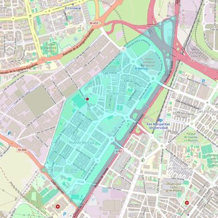

Santa María de los Ángeles
- Arciprestazgo
- Getafe
- Población
- Getafe
- Dirección postal
- Avda. el Parque, 10 (El Bercial)
- Código postal
- 28907
- Extensión
- 1,88 km² (188 ha)
- Teléfono
- 916 832 101
- Correo electrónico
- psantamariadelosangeles@outlook.es
- Información demográfica
- De la parroquia · De la población (Getafe) · Del arciprestazgo (Getafe)
- Resumen para imprimir
- La parroquia en una hoja (A4)


Descargar mapaLímites según decreto
“Partiendo de la confluencia de la carretera N-401 con la carretera de Leganés a Getafe (A-402), arrancan por el eje de la carretera de Leganés a Getafe, en dirección noroeste, hasta el término municipal de Leganés; continúan por los límites de los términos municipales de Leganés y Getafe, en dirección noreste y sureste, hasta el encuentro con la carretera N-401; siguen por el eje de ésta última carretera, en dirección suroeste, hasta la confluencia con la carretera de Leganés a Getafe, punto de partida”.
¿Algún dato de esta parroquia es incorrecto o ha cambiado? Comuníquenoslo.